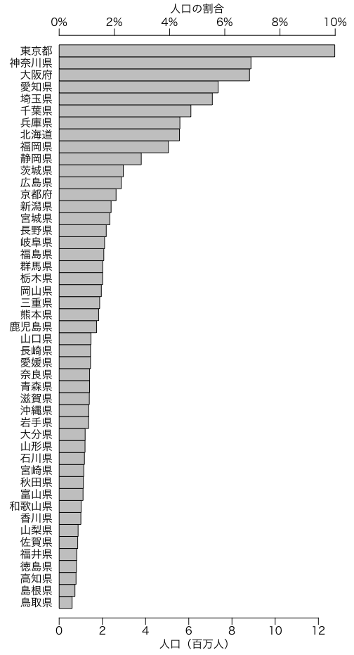

データの例として いろいろな都道府県別データ の人口を使ってみましょう。
グラフを描く前に，Macの場合は par(family="HiraKakuPro-W3")
などと打ち込んで日本語のフォントを設定しておきます。
棒グラフの基本は
barplot(population)
または
barplot(population, names.arg=kenmei)
ですが，この場合は横にするほうが文字が入りやすいので，次のようにします。
par(las=1) # 縦軸の文字を横向きにしない（las: label style）
par(mar=c(5,5,4,2)+0.1) # マージン（デフォルト: c(5,4,4,2)+0.1）
par(mgp=c(2,0.8,0)) # 軸マージン（デフォルト: c(3,1,0)）
barplot(population, names.arg=kenmei, horiz=TRUE)
字が縦に詰まるので，グラフウィンドウをマウスで少し縦に長くします（あるいはオプション
cex.names=0.6
を与えると軸の文字サイズが0.6倍になります）。しかしよく見たら順序が逆なので，次のようにすると正しくなります。単位は千人ではなく百万人にしました。
barplot(population[47:1]/1000, names.arg=kenmei[47:1], horiz=TRUE)
横軸の説明を付けたいですね。テキストをグラフの任意の位置に書くのは text()
で，マージンの任意の位置に書くのは mtext()
です。
mtext("人口（百万人）",1,padj=1.5)
目盛りを上にも付けたいなら，次のようにします。
axis(3)
1，2，3，4は下，左，上，右を意味します。目盛りだけで数値が不要なら
axis(3, labels=FALSE) のようにします。
しかし，北から南に並べるより，人口の多い順に並べたほうがわかりやすいので，次のようにしてみました。
o = order(population)
barplot(population[o]/1000, names.arg=kenmei[o], horiz=TRUE)
このグラフで仮に三重県がどの位置にあるかを言いたいのなら，
barplot(population[o]/1000, names.arg=kenmei[o], horiz=TRUE,
col=ifelse(kenmei[o]=="三重県",gray(0.5),gray(0.9)))
のように三重県だけ別の色（ここでは濃い灰色）にすれば意図がよく伝わるでしょう。
次の例は，棒の間隔（space）を0にして度数分布図風にしたものです。上部に全人口に対する割合の目盛りを入れました。

par(mgp=c(2,0.5,0)) # 軸マージン（デフォルト: c(3,1,0)）
s = sum(population) / 1000
barplot(population[o]/1000, names.arg=kenmei[o], horiz=TRUE,
space=0, xlim=c(0,s/10), axes=FALSE)
axis(1, line=-1)
t = seq(0,10,2)
axis(3, s * t / 100, paste(t, "%", sep=""), line=-1)
mtext("人口（百万人）", 1, padj=0.8)
mtext("人口の割合", 3, padj=-0.8)
Last modified: 2009-10-16 08:10:10